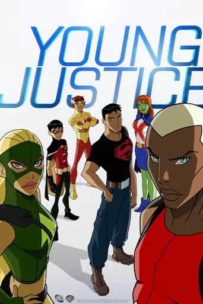

The genetics
Genetic science is the source of several of the series' main threads. Cadmus Labs, a secret facility tied to the villains' society, the Light, creates Superboy, a clone of Superman who grows into one of the central heroes and struggles with his identity as a clone, as well as the Genomorphs, engineered creatures intended as weapons, and a clone of Roy Harper that has replaced the original. Later seasons introduce the 'meta-gene', a dormant gene that can be activated to give people powers; once the alien Reach reveal it, governments and criminal organisations traffic teenagers to exploit it, which the Team fights. Those who practise genetics are therefore clandestine laboratories, villains and exploiters, while sympathy goes to their creations, above all Superboy. The cloning and gene activation follow superhero conventions rather than real biology.
How genetics is portrayed
- Overall portrayal of genetics
- negative Genetic work is done by secret laboratories, villains and exploiters; the series sympathises with the clones and metahumans, not with those who make or exploit them.
- Outcome of the genetic intervention
- negative Cadmus's cloning produces living weapons and replaces a hero with a copy, and activation of the meta-gene leads to the trafficking of teenagers; Superboy's growth into a hero is the main good outcome.
- Cadmus Labs
- villain Aim: military, power (negative). The secret facility, linked to the Light, clones Superman to make Superboy, breeds Genomorphs as living weapons and replaces Roy Harper with a clone. The Team discovers and opposes its clandestine experiments.
- The Light
- villain Aim: power (negative). The villains' secret society stands behind Cadmus and later exploits metahumans in its bid to manipulate world events.
- The Reach and the metahuman traffickers
- villain Aim: power, military (negative). The alien Reach reveal and exploit the dormant meta-gene, and nations and criminal groups then traffic teenagers to activate their powers in an arms race that the heroes fight.
The story
This animated series follows a covert team of teenage superheroes working under the Justice League's supervision. In the first season, Robin, Kid Flash and Aqualad investigate a fire at Cadmus Labs and find Superboy, a clone of Superman, together with the Genomorphs, creatures made as living weapons; with Miss Martian and Artemis they form a secret team and uncover the Light, a society of villains manipulating world events, and a Cadmus clone of the hero Speedy. The second season, Invasion, set five years later, pits the Team against the alien Reach, who have infiltrated Earth; Kid Flash dies stopping their bomb. In Outsiders, the Reach's revelation that humans carry a dormant 'meta-gene' that can be activated sets off an international arms race and the trafficking of teenagers with latent powers. Phantoms follows the original members into adulthood and ends with Superboy marrying Miss Martian.